This is the final step in executing the process model. In this example, we do not create separate groups for requestors and suppliers; we use the same actor and the same users throughout the entire process.
Define lane actors
Click on the lane, then within "General" tab, click on "Actors" and select the existing actor.
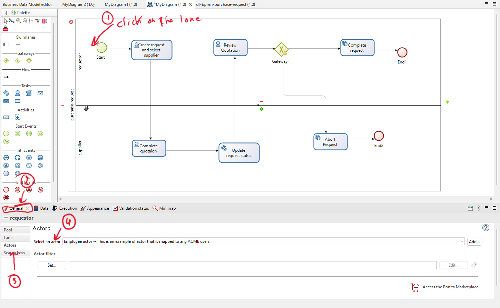
Actors configuration
Click on 'Configuration,' then click on 'Groups,' select '/acme' to retrieve all the user groups, and finally, click on 'Finish' to save the configuration.
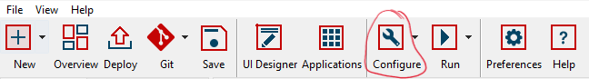
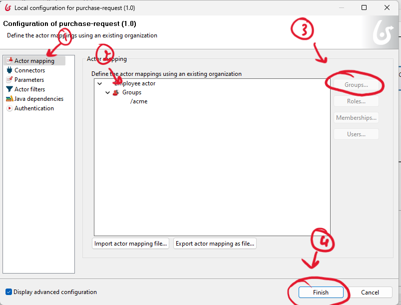
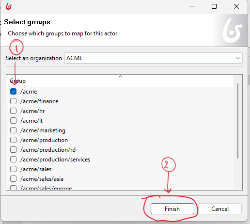
Now you are ready to execute the process model.
Process execution
-
To execute the process model, click on "Run".
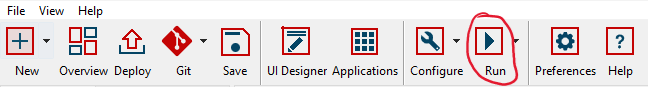
-
Your browser will automatically open. Start a new process and then click on 'Tasks'.
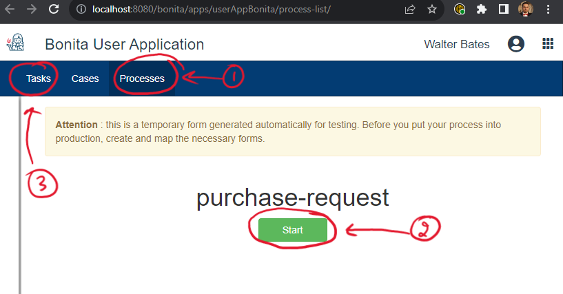
-
Select a task, and then click on 'Take'.
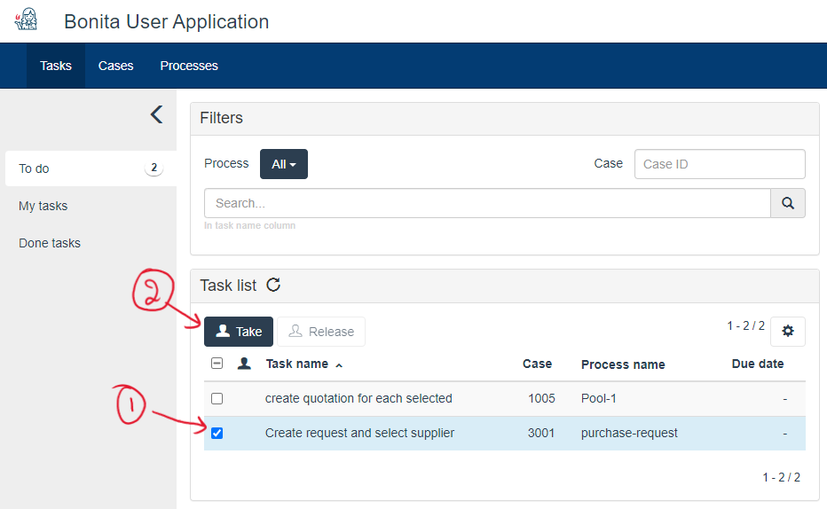
-
Fill out the form, and then click on 'Submit'.
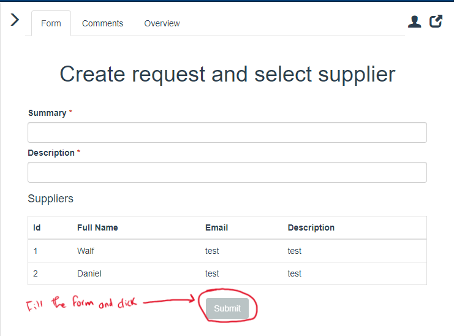
-
Refresh the task, select the next task, and continue with the process until it is completed.
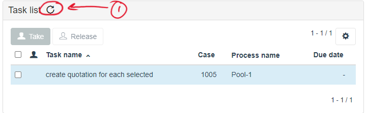
-
You can validate the 'Done' tasks to ensure that everything is in order.
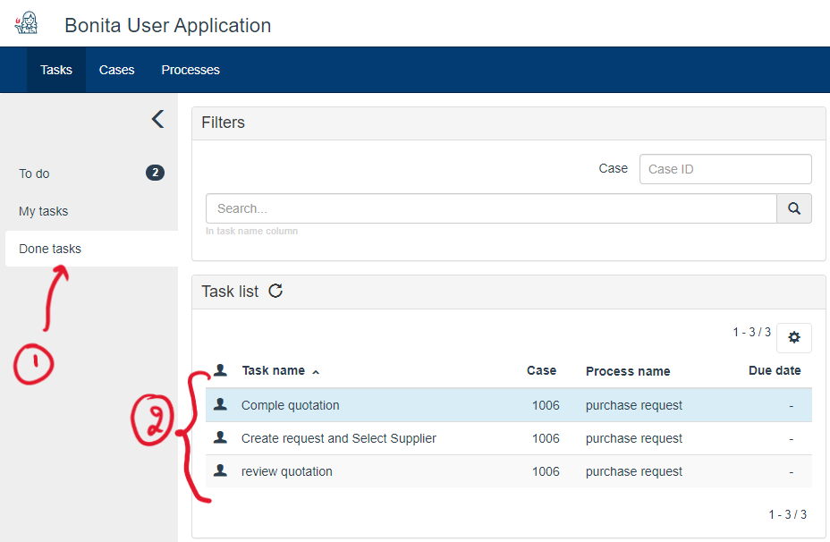
-
Alternatively, you can open the BDM and validate the data stored in it.
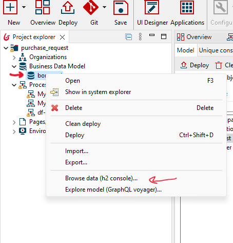
Then select a quotation or request to confirm that the data is stored within the BDM.